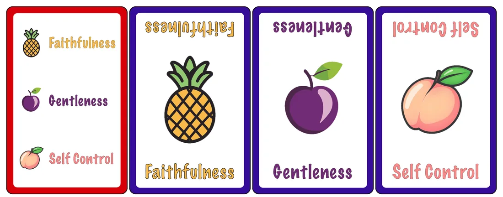

A simple card collecting game
Fruity
Collect three fruits of the Spirit to fill your basket — a quick matching game for kids and grown-ups.
- 2–6 players
- 5–10 min
- 54 cards
- Pattern matching
$12.99
Ships from the SDG Biblical Wisdom shop.

Fill your basket
“But the fruit of the Spirit is love, joy, peace, patience, kindness, goodness, faithfulness, gentleness, self-control; against such things there is no law.”Galatians 5:22–23 ESV
Fruity is a simple card set collecting game that teaches pattern matching and the Biblical Fruit of the Spirit.
The goal of the game is to collect one each of three Fruit cards to complete their Fruit Basket.
The game can be played by kids old enough to recognize matching symbols, is played by 2 - 6 players, and each game takes 5 - 10 minutes to play.
Players win when they’ve collected all three fruits in their basket. The game continues until all players have won.
What’s in the box
A deck of 54 cards and nothing else. Tap a card to enlarge it.
36 Fruit cards
Four of each of the nine fruits of the Spirit, each with its own fruit picture.
12 Fruit Basket cards
Each lists three fruits. The basket you are dealt is the three you are collecting.
6 Turn Instruction cards
Shows, in words and symbols, what you do on your turn, in order.
The 54 cards
| Cards | How many | Notes |
|---|---|---|
| Fruit cards | 36 | 4 of each of the 9 fruits |
| Fruit Basket cards | 12 | 12 different baskets |
| Turn Instruction cards | 6 | one for each player |
| Total | 54 |
The Fruit cards
Each of the Fruit cards has the name of the fruit at the bottom of the card for the player to read, the name upside down at the top of the card for the other players to read, and an icon of a kind of fruit in the center of the card representing that fruit of the Spirit.
The Fruit Basket cards
Each Fruit Basket card has three fruit of the Spirit and their associated icons. Each player gets a Fruit Basket card and this determines which Fruit cards he is trying to collect.
Note: The initial printing of the game includes one Fruit Basket card that has the wrong symbol next to a fruit name. If a player has this Fruit Basket, they can complete the basket by either matching the word or the symbol.
Here are a few examples:
The Turn Instruction card
Each player is given an Instruction card, which shows in words and symbols, the actions they take, in order, on their turn.
How to play
Draw a card, keep the fruits in your basket, pass on the one you do not need. The first to fill a basket wins; play on until everyone has.
The goal
There are 54 cards in the Fruity game: 36 Fruit Cards, 12 Basket Cards, 6 Turn Instruction Cards. (See Below.)
The objective of the game is for each player to collect one each of three Fruit Cards to complete their Fruit Basket.
Note: The initial printing of the game includes one Fruit Basket card that has the wrong symbol next to a fruit name. If a player has this Fruit Basket, they can complete the basket by either matching the word or the symbol.
Setup
- Each player is given a Turn Instruction card and a Fruit Basket card. (The unused Turn Instruction and Fruit Basket cards are set aside and not used in the rest of the game.)
- Each player is dealt three Fruit cards.
- If any of the Fruit cards dealt to a player match a fruit on that player's Fruit Basket card, that Fruit card is placed face-up in front of the player. (But only one of each Fruit.)
- The remaining undealt Fruit cards are placed face-down as a draw pile.
- The top Fruit card in the draw pile is turned face-up to form a discard pile.
Beginning the game
- Choose a player to go first.
- This player draws a Fruit card from the face-down draw pile.
- If this Fruit is one in the player's Fruit Basket that he hasn't yet collected, he places the Fruit card face up in front of him.
- The player chooses a Fruit card in his hand and passes it to the player to his right.
Subsequent turns
Play continues with the next player to the right:
- This player receives the Fruit card passed by the previous player.
- If this Fruit is one in the player's Fruit Basket that he hasn't yet collected, he places the Fruit card face up in front of him.
- He chooses a Fruit card in his hand and places it face-up on the discard pile.
- He then draws a Fruit card from the face-down draw pile.
- If this Fruit is one in the player's Fruit Basket that he hasn't yet collected, he places the Fruit card face up in front of him.
- The player chooses a Fruit card in his hand and passes it to the player to his right.
Winning the game
- A player wins when he has placed face-up in front of him one of each of the Fruit cards in his Fruit Basket.
- The player passes his remaining card to the player to his right and play continues with the remaining players until all have completed their Fruit Baskets.
Example game
Below we walk through a game between three players, turn by turn. The different background colors will indicate the activities of each player.
Initial Deal
At the beginning of the game, each player is given a Turn Instruction card and a Fruit Basket card, and is dealt three Fruit cards, as shown below.
Player 1
Player 2
Faithfulness is one of the fruits in his basket, so Player 2 lays down the Faithfulness card in front of him.
Player 3
Round 1
Player 1
Player 1 matching cards played face up: (none yet)
Player 1 hand at start of turn:
Player 1 draws Joy card
Player 1 lays down Joy card in front of him.
Player 1 passes Patience card to Player 2.
Player 1 hand at end of turn:
Player 2
Player 2 matching cards played face up:
Player 2 receives Patience card from Player 1
Player 2 hand at start of turn:
Player 2 discards Goodness card.
Player 2 draws Faithfulness card.
Player 2 lays down Patience card.
Player 2 passes Faithfulness card to Player 3.
Player 2 hand at end of turn:
Player 3
Player 3 matching cards played face up: (none yet)
Player 3 receives Faithfulness card from Player 2.
Player 3 hand at start of turn:
Player 3 discards Patience card.
Player 3 draws Self-Control card.
Player 3 lays down Faithfulness card.
Player 3 passes the Gentleness card to Player 1.
Player 3 hand at end of turn:
Round 2
Player 1
Player 1 matching cards played face up:
Player 1 receives Gentleness card from Player 3.
Player 1 hand at start of turn:
Player 1 discards Kindness card
Player 1 draws Love card
Player 1 lays down Love card in front of him.
Player 1 passes Self-Control card to Player 2.
Player 1 hand at end of turn:
Player 2
Player 2 matching cards played face up:
Player 2 receives Self-Control card from Player 1
Player 2 hand at start of turn:
Player 2 discards Gentleness card.
Player 2 draws Joy card.
Player 2 passes Joy card to Player 3.
Player 2 hand at end of turn:
Player 3
Player 3 matching cards played face up:
Player 3 receives Joy card from Player 2.
Player 3 hand at start of turn:
Player 3 discards Patience card.
Player 3 draws Goodness card.
Player 3 lays down Joy and Goodness cards.
Player 3 wins!
Player 3 passes the Self Control card to Player 1.
Round 3
Player 1
Player 1 matching cards played face up:
Player 1 receives Self-Control card from Player 3.
Player 1 hand at start of turn:
Player 1 discards Self Control card
Player 1 draws Self Control card
Player 1 passes Gentleness card to Player 2.
Player 1 hand at end of turn:
Player 2
Player 2 matching cards played face up:
Player 2 receives Gentleness card from Player 1
Player 2 hand at start of turn:
Player 2 discards Gentleness card.
Player 2 draws Self-Control card.
Player 2 passes Self-Control card to Player 1.
Player 2 hand at end of turn:
Round 4
Player 1
Player 1 matching cards played face up:
Player 1 receives Self-Control card from Player 2.
Player 1 hand at start of turn:
Player 1 discards Self Control card
Player 1 draws Love card
Player 1 passes Love card to Player 2.
Player 1 hand at end of turn:
Player 2
Player 2 matching cards played face up:
Player 2 receives Love card from Player 1
Player 2 hand at start of turn:
Player 2 discards Self-Control card.
Player 2 draws Gentleness card.
Player 2 lays down Love card.
Player 2 wins!
Player 2 passes Gentleness card to Player 1.
Round 5
Player 1
Player 1 matching cards played face up:
Player 1 receives Gentleness card from Player 2.
Player 1 hand at start of turn:
Player 1 discards Self-Control card
Player 1 draws Peace card
Player 1 lays down Peace card.
Player 1 wins!
Game over!
All three players have filled their baskets: Player 3 won in round 2, Player 2 in round 4 and Player 1 in round 5.
Get Fruity
$12.99 · Orders ship from the SDG Biblical Wisdom shop.